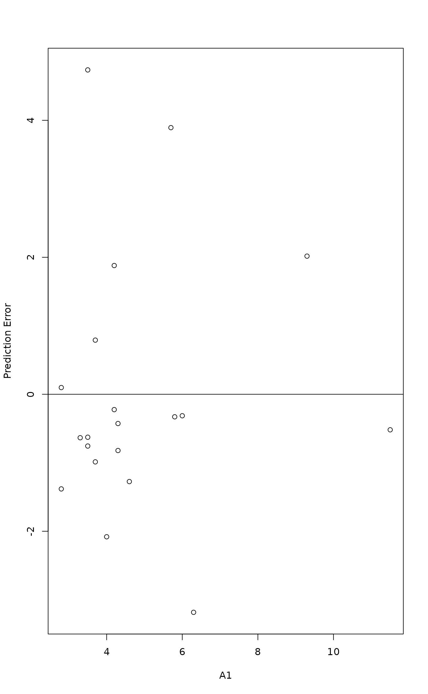

Prediction Tools for [Constrained] Ordination (CCA, RDA, DCA, CA, PCA)
predict.cca.RdFunction predict can be used to find site and species scores or
estimates of the response data with new data sets, Function
calibrate estimates values of constraints with new data set.
Functions fitted and residuals return estimates of
response data.
Usage
# S3 method for class 'cca'
fitted(object, model = c("CCA", "CA", "pCCA"),
type = c("response", "working"), ...)
# S3 method for class 'capscale'
fitted(object, model = c("CCA", "CA", "pCCA", "Imaginary"),
type = c("response", "working"), ...)
# S3 method for class 'cca'
residuals(object, ...)
# S3 method for class 'cca'
predict(object, newdata, type = c("response", "wa", "sp", "lc", "working"),
rank = "full", model = c("CCA", "CA"), scaling = "none",
hill = FALSE, ...)
# S3 method for class 'rda'
predict(object, newdata, type = c("response", "wa", "sp", "lc", "working"),
rank = "full", model = c("CCA", "CA"), scaling = "none",
correlation = FALSE, const, ...)
# S3 method for class 'dbrda'
predict(object, newdata, type = c("response", "lc", "wa", "working"),
rank = "full", model = c("CCA", "CA"), scaling = "none", const, ...)
# S3 method for class 'cca'
calibrate(object, newdata, rank = "full", ...)
# S3 method for class 'cca'
coef(object, norm = FALSE, ...)
# S3 method for class 'decorana'
predict(object, newdata, type = c("response", "sites", "species"),
rank = 4, ...)Arguments
- object
- model
Show constrained (
"CCA"), unconstrained ("CA") or conditioned “partial” ("pCCA") results. Forfittedmethod ofcapscalethis can also be"Imaginary"for imaginary components with negative eigenvalues- newdata
New data frame to be used in prediction or in calibration. Usually this a new community data frame, but with
type = "lc"and for constrained component withtype = "response"andtype = "working"it must be a data frame of constraints. Thenewdatamust have the same number of rows as the original community data for accaresult withtype = "response"ortype = "working". If the original model had row or column names, then new data must contain rows or columns with the same names (row names for species scores, column names for"wa"scores and constraint names of"lc"scores). In other cases the rows or columns must match directly. The argument is not implemented for"wa"scores indbrda.- type
The type of prediction, fitted values or residuals:
"response"scales results so that the same ordination gives the same results, and"working"gives the values used internally, that is after Chi-square standardization inccaand scaling and centring inrda. Incapscaleanddbrdathe"response"gives the dissimilarities, and"working"the internal data structure analysed in the ordination. Alternative"wa"gives the site scores as weighted averages of the community data,"lc"the site scores as linear combinations of environmental data, and"sp"the species scores. Inpredict.decoranathe alternatives are scores for"sites"or"species".- rank
The rank or the number of axes used in the approximation. The default is to use all axes (full rank) of the
"model"or all available four axes inpredict.decorana.- scaling
logical, character, or numeric; Scaling or predicted scores with the same meaning as in
cca,rda,dbrda, andcapscale. Seescores.ccafor further details on acceptable values.- correlation, hill
logical; correlation-like scores or Hill's scaling as appropriate for RDA and CCA respectively. See
scores.ccafor additional details.- const
Constant multiplier for RDA scores. This will be used only when
scalingis notFALSE, and the default value will give similar scaling as inscores.rda.- norm
Coefficients for variables that are centred and scaled to unit norm.
- ...
Other parameters to the functions.
Details
Function fitted gives the approximation of the original data
matrix or dissimilarities from the ordination result either in the
scale of the response or as scaled internally by the function.
Function residuals gives the approximation of the original data
from the unconstrained ordination. With argument type =
"response" the fitted.cca and residuals.cca function
both give the same marginal totals as the original data matrix, and
fitted and residuals do not add up to the original data. Functions
fitted and residuals for dbrda and
capscale give the dissimilarities with type =
"response", but these are not additive. However, the
"working" scores are additive for capscale (but
not for dbrda). The fitted and residuals
for capscale and dbrda will include the
additive constant if that was requested in the function call. All
variants of fitted and residuals are defined so that for
model mod <- cca(y ~ x), cca(fitted(mod)) is equal to
constrained ordination, and cca(residuals(mod)) is equal to
unconstrained part of the ordination.
Function predict can find the estimate of the original data
matrix or dissimilarities (type = "response") with any rank.
With rank = "full" it is identical to fitted. In
addition, the function can find the species scores or site scores from
the community data matrix for cca or rda.
The function can be used with new data, and it can be used to add new
species or site scores to existing ordinations. The function returns
(weighted) orthonormal scores by default, and you must specify
explicit scaling to add those scores to ordination
diagrams. With type = "wa" the function finds the site scores
from species scores. In that case, the new data can contain new sites,
but species must match in the original and new data. With type="sp"
the function finds species scores from site constraints
(linear combination scores). In that case the new data can contain new
species, but sites must match in the original and new data. With
type = "lc" the function finds the linear combination scores
for sites from environmental data. In that case the new data frame
must contain all constraining and conditioning environmental variables
of the model formula. With type = "response" or
type = "working" the new data must contain environmental variables
if constrained component is desired, and community data matrix if
residual or unconstrained component is desired. With these types, the
function uses newdata to find new "lc" (constrained) or
"wa" scores (unconstrained) and then finds the response or
working data from these new row scores and species scores. The
original site (row) and species (column) weights are used for
type = "response" and type = "working" in correspondence
analysis (cca) and therefore the number of rows must
match in the original data and newdata.
If a completely new data frame is created, extreme care is needed
defining variables similarly as in the original model, in particular
with (ordered) factors. If ordination was performed with the formula
interface, the newdata can be a data frame or matrix, but
extreme care is needed that the columns match in the original and
newdata.
Function calibrate.cca finds estimates of constraints from
community ordination or "wa" scores from cca,
rda and capscale. This is often known as
calibration, bioindication or environmental reconstruction, and it
is equivalent to performing Weighted Averaging (see
wascores). As a Weighted Averaging method it uses
deshrinking where the sum of weighted prediction errors is
zero. Basically, the method is similar to projecting site scores
onto biplot arrows, but it uses regression coefficients. The
function can be called with newdata so that cross-validation
is possible. The newdata may contain new sites, but species
must match in the original and new data. The function does not work
with ‘partial’ models with Condition term, and it
cannot be used with newdata for capscale or
dbrda results. The results may only be interpretable
for continuous variables.
Function coef will give the regression coefficients from centred
environmental variables (constraints and conditions) to linear
combination scores. The coefficients are for unstandardized environmental
variables. The coefficients will be NA for aliased effects.
Function predict.decorana is similar to predict.cca.
However, type = "species" is not available in detrended
correspondence analysis (DCA), because detrending destroys the mutual
reciprocal averaging (except for the first axis when rescaling is not
used). Detrended CA does not attempt to approximate the original data
matrix, so type = "response" has no meaning in detrended
analysis (except with rank = 1).
References
Greenacre, M. J. (1984). Theory and applications of correspondence analysis. Academic Press, London.
Examples
data(dune, dune.env)
mod <- cca(dune ~ A1 + Management + Condition(Moisture), data=dune.env)
# Definition of the concepts 'fitted' and 'residuals'
mod
#> Call: cca(formula = dune ~ A1 + Management + Condition(Moisture), data =
#> dune.env)
#>
#> -- Model Summary --
#>
#> Inertia Proportion Rank
#> Total 2.1153 1.0000
#> Conditional 0.6283 0.2970 3
#> Constrained 0.5109 0.2415 4
#> Unconstrained 0.9761 0.4615 12
#>
#> Inertia is scaled Chi-square
#>
#> -- Eigenvalues --
#>
#> Eigenvalues for constrained axes:
#> CCA1 CCA2 CCA3 CCA4
#> 0.24932 0.12090 0.08160 0.05904
#>
#> Eigenvalues for unconstrained axes:
#> CA1 CA2 CA3 CA4 CA5 CA6 CA7 CA8 CA9 CA10
#> 0.30637 0.13191 0.11516 0.10947 0.07724 0.07575 0.04871 0.03758 0.03106 0.02102
#> CA11 CA12
#> 0.01254 0.00928
#>
cca(fitted(mod))
#> Call: cca(X = fitted(mod))
#>
#> -- Model Summary --
#>
#> Inertia Rank
#> Total 0.5109
#> Unconstrained 0.5109 4
#>
#> Inertia is scaled Chi-square
#>
#> -- Eigenvalues --
#>
#> Eigenvalues for unconstrained axes:
#> CA1 CA2 CA3 CA4
#> 0.24932 0.12090 0.08160 0.05904
#>
cca(residuals(mod))
#> Call: cca(X = residuals(mod))
#>
#> -- Model Summary --
#>
#> Inertia Rank
#> Total 0.9761
#> Unconstrained 0.9761 12
#>
#> Inertia is scaled Chi-square
#>
#> -- Eigenvalues --
#>
#> Eigenvalues for unconstrained axes:
#> CA1 CA2 CA3 CA4 CA5 CA6 CA7 CA8 CA9 CA10
#> 0.30637 0.13191 0.11516 0.10947 0.07724 0.07575 0.04871 0.03758 0.03106 0.02102
#> CA11 CA12
#> 0.01254 0.00928
#>
# Remove rare species (freq==1) from 'cca' and find their scores
# 'passively'.
freq <- specnumber(dune, MARGIN=2)
freq
#> Achimill Agrostol Airaprae Alopgeni Anthodor Bellpere Bromhord Chenalbu
#> 7 10 2 8 6 6 5 1
#> Cirsarve Comapalu Eleopalu Elymrepe Empenigr Hyporadi Juncarti Juncbufo
#> 1 2 5 6 1 3 5 4
#> Lolipere Planlanc Poaprat Poatriv Ranuflam Rumeacet Sagiproc Salirepe
#> 12 7 14 13 6 5 7 3
#> Scorautu Trifprat Trifrepe Vicilath Bracruta Callcusp
#> 18 3 16 3 15 3
mod <- cca(dune[, freq>1] ~ A1 + Management + Condition(Moisture), dune.env)
## IGNORE_RDIFF_BEGIN
predict(mod, type="sp", newdata=dune[, freq==1], scaling="species")
#> CCA1 CCA2 CCA3 CCA4
#> Chenalbu 1.5737337 0.7842538 0.5503660 -0.35108333
#> Cirsarve 0.5945146 0.3714228 -0.2862647 -0.88373727
#> Empenigr -1.8771953 0.9904299 -0.2446222 -0.04858656
# New sites
predict(mod, type="lc", new=data.frame(A1 = 3, Management="NM", Moisture="2"), scal=2)
#> CCA1 CCA2 CCA3 CCA4
#> 1 -2.38829 1.230652 -0.2363485 0.3338258
# Calibration and residual plot
mod <- cca(dune ~ A1, dune.env)
head(pred <- calibrate(mod))
#> A1
#> 1 1.418491
#> 2 2.873101
#> 3 3.873171
#> 4 3.976229
#> 5 3.116662
#> 6 3.479079
## For single variable similar to weighted averaging calibration, but
## different deshrinking
head(wascores(wascores(dune.env$A1, dune, expand=TRUE), t(dune), expand=TRUE))
#> [,1]
#> 1 2.326038
#> 2 3.376503
#> 3 4.098717
#> 4 4.173142
#> 5 3.552394
#> 6 3.814118
## IGNORE_RDIFF_END
with(dune.env, plot(A1, pred - A1, ylab="Prediction Error"))
abline(h=0)
